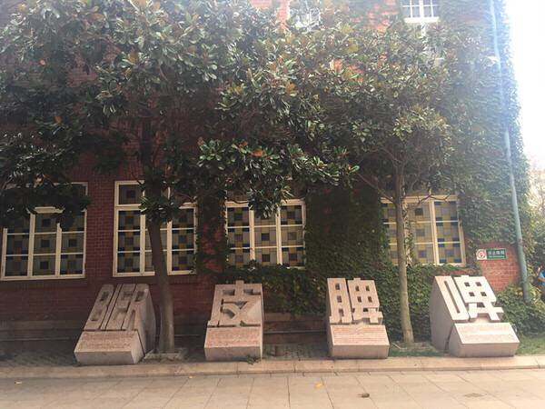
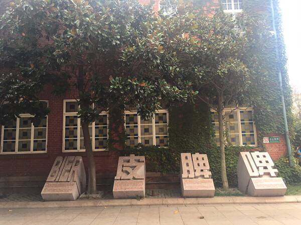

为了更加了解青啤，我们五一期间走进了青啤博物馆，一起参观了青啤博物馆，这是一场绝妙的视觉与听觉的切身体验，让我们一起来欣赏青啤的魅力！
 



青岛啤酒博物馆是青岛啤酒股份有限公司投资2800万元建成的国内唯一的啤酒博物馆，其展出面积达6000余平方米。博物馆设立在青岛啤酒百年前的老厂房、老设备之内，以青岛啤酒的百年历程及工艺流程为主线，浓缩了中国啤酒工业及青岛啤酒的发展史，集文化历史、生产工艺流程、啤酒娱乐、购物、餐饮为一体，具备了旅游的知识性、娱乐性、参与性等特点，体现了世界视野、民族特色、穿透历史、融汇生活的文化理念。
设计理念
青岛啤酒博物本着尊重历史、挖掘历史、保护历史、再现历史的宗旨，同时综合专业性、国际性、前瞻性、趣味性、和谐性为一体
概念规划是由嘉世伯啤酒博物馆负责人尼尔森（N ielsen）设计完成，由清华大学美术学院环境艺术研究所的设计人员负责室内装饰布展。集啤酒文化展示、生产线参观、啤酒生产介绍、酒吧、游客参与为一体，以图片、文字、实物为主体，运用声、光、电等媒体展示青啤百年历史、生产设备以及啤酒历史、啤酒文化。
游览区域
博物馆共分为百年历史和文化、生产工艺、多功能区三个参观游览区域。
核心区域为第一区域―――历史文化区域。通过图文资料，了解啤酒起源、青啤的悠久历史、荣誉、青岛国际啤酒节、国内外重要人物来青啤参观访问的情况。展现了许多从欧洲和全国收集的文物、图片、资料以及青岛啤酒各个阶段的实物。一些祖辈曾在青啤工作过的德国、日本友人专门捐献的文物史料，使得这一展区更加引人入胜。
第二区域为生产工艺流程区域，包括老建筑物、老设备及车间环境与生产场景，在生产流程中每一个代表性部位放置的放像设备，可形象介绍青岛啤酒的生产流程及历史沿革。为重现历史原貌，博物馆在老糖化车间的老发酵池，设置了工人生产劳动的雕塑模型，同时复制老实验室场景和工人翻麦芽场景。
第三区域为多功能区域。一层是能容纳100多名游客的品酒区和购物中心，游客在此可以尽情地品尝多种不同品质的新鲜青岛啤酒，购买各种纪念品。二楼有综合娱乐设施，前卫的设计理念和高科技手段，使知识性和娱乐性有机结合，可让游客在娱乐中了解啤酒酿造的复杂过程。同时，全馆多处设置的触摸式自动电子显示屏，可以让游客随时查询自己感兴趣的文献资料。
旅游线路
青岛啤酒工业旅游分为A、B两条线。A线是青岛啤酒博物馆，以百年老建筑为依托，融合古老的建筑、珍贵典藏和现代化展区设计，投资1000多万元，建立了专门旅游参观长廊，做到生产、参观互不影响。